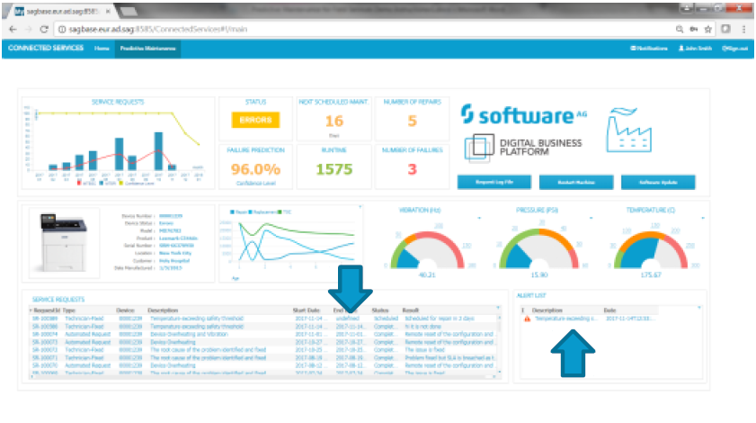

User Guide
The Demo Instructions Document guides you through all steps and topics creating a foundation to run the Demo.
Demo Pre-checks
- Please ensure that you have completed the upfront preparation that can be found as a separate document linked to the demo.
- The demo can be run from either in inside the VM or from the your local PC browser (please check upfront prep).
Starting the Demo
-
Logon to the demo using the following URL:
URL = http://sagbase.eur.ad.sag:8585/ConnectedServices#!/home
Username/password = Administrator/manage The following window
should be displayed.

-
Select the „Start Demo“ button and select the desired outcome. Three switches are displayed.

Clear Terracotta – This option clears the Terracotta Caches and resets the data. Note this will clear all caches of every demo connected the the common event bus.
Load Master Data – This option loads the Master Data into the Terracotta Caches on all demos connected to the common event bus.
Start Simulator – This generates events for vibration, pressure and temperature and raises one alert for a temperature increase in the time frame of 1 min from starting the demo.
Please note that this can be run together and there will be a delay between each action and when completed the message will appear „Demo Started“. If you which to generate a second event stop the demo and start the demo again. When stopping the demo the data will NOT be cleared from the cache.
Running the demo
Once the demo is started please select the Predictive Maintenance Tab in the blue bar and download the story board required to tell the business story surrounding this demo.

To drill down the the list of devices please select the (i) against the required drill down.

To drill down to an actual device select the details button.
Please note that the demo simulator operates on a specific device (00001239) only and an alert will be generated when the temperature goes above 150 resulting in the following screen. If the Cumulocity IOT Demo Center is connected events from the devices (00001250 and 00001252) can also be used to trigger the alert.

If dynamic business process demo is connected a process will be raised against this device and will be updated on the completion of the process. If not then the demo is completed.
Dynamic Business Process (if this demo is connected)
If this demo is connected a business process will be created and can be found in the business console (see upfront preperation/instructions). Once completed the process will be updated, alert removed and device sataus changed. (further details of the connected demo for Dynamic Business Process demo can be found at the following location: https://solutionbook.softwareag.com/sb-web/page/demo.xhtml?guid=688433620 )